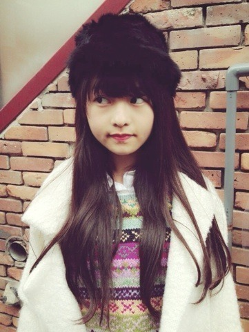
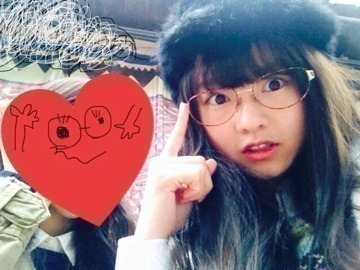

| 2013/11 25 Mon | ジェリービーンズ眼 鏡。520回目 |
MUSIC FAIR
ミュージックドラゴン
チェックありがとうございました！

黒いふぁさふぁさした帽子
帽子だいすき。
また髪がだいぶ伸びたよ。
アイロンのせいか
毛先がどんどん茶色になってきてる。
染めてる？ってよく聞かれるけど
染めてないんだよね。
染めてみたい気持ちはあるけど、
染めたら元の色には戻れないって
聞くので染める勇気がない...
グリーンアッシュが入った
髪色にしてる人すきなんだよなー
最近はふわふわした
ウェーブ巻きがすきです。
夜寝る前に三つ編みして
貧乏パーマするのもはまってる。

友達とランチしました。
眼鏡だし
シャツにニット
シャツにベストで
2人ともきっちり感があった笑
落ち着くぜー
今日一日興奮が収まらない...
お腹がうずうずしてます...
どうしましょう...
あーーーーしあ わ せ

幸せの舞
まりか
コメント(337)
2013/11/25 21:06